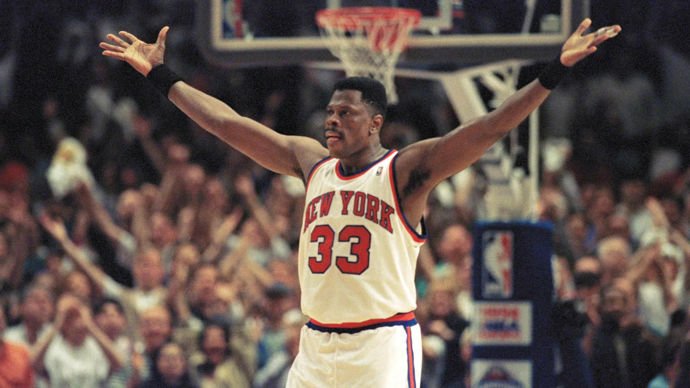
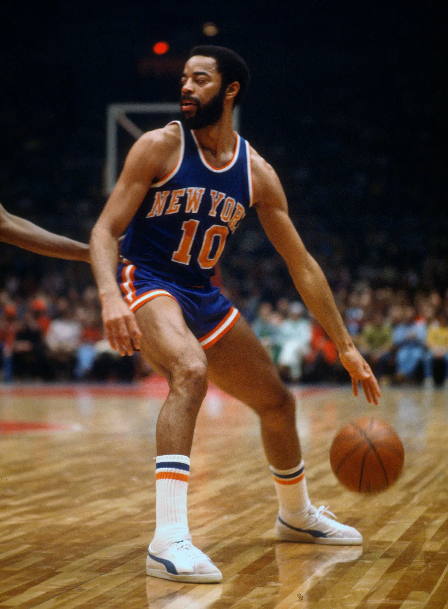
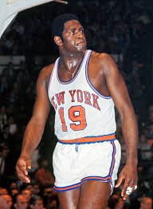
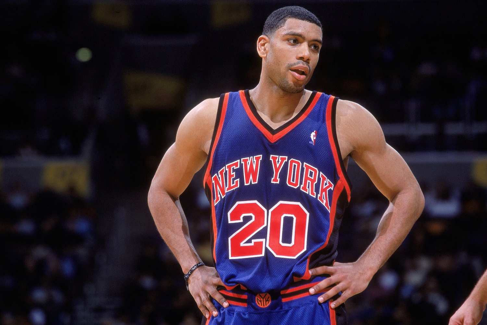
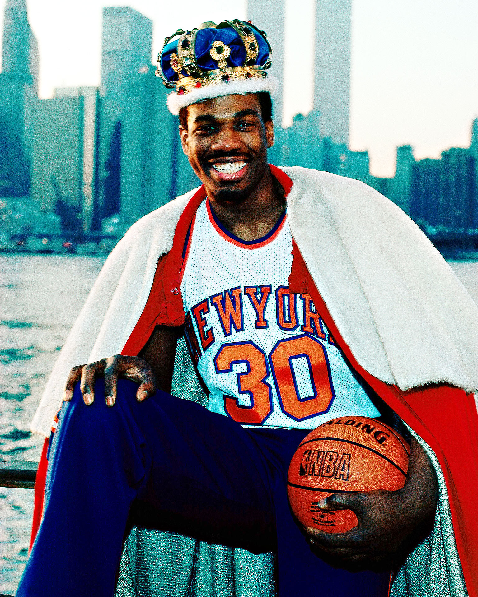
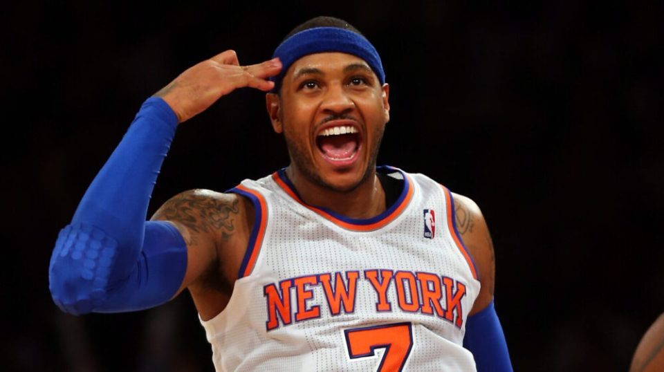
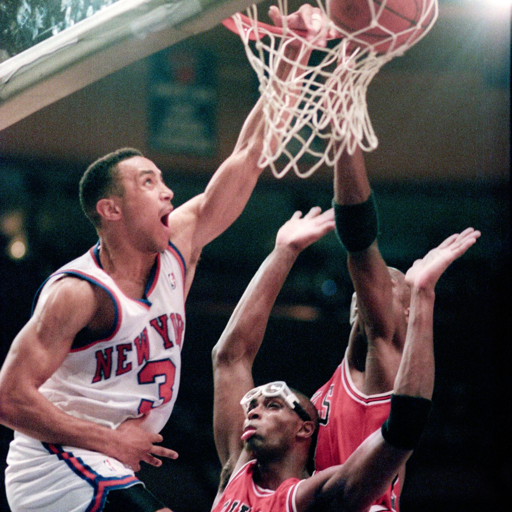

- Patrick Ewing 
- Walt Frazier 
- Willis Reed 
- Allan Houston 
- Bernard King 
- Carmelo Anthony 
- John Starks 
Possibly known as the greatest Knick ever, Patrick Ewing Patrick Ewing was the cornerstone of the New York Knicks for 15 seasons, leading the franchise to its longest period of sustained success in the modern era. During his tenure, he achieved numerous accolades, including being an 11-time NBA All-Star, earning seven All-NBA selections (including a First-Team nod in 1990), and winning the Rookie of the Year award in 1986. Ewing also holds multiple franchise records for the Knicks, including points scored, rebounds, blocks, steals, and games played. He led the Knicks to the NBA Finals in 1994, where they fell short in a hard-fought series against the Houston Rockets, and was part of the 1999 Knicks team that also reached the Finals. Despite never winning a championship with the Knicks, Ewing is widely considered one of the greatest players in franchise history and was inducted into the Naismith Memorial Basketball Hall of Fame in 2008.
Walt "Clyde" Frazier cemented his place in New York Knicks history with a stellar career marked by numerous achievements and contributions to the team's success. As the Knicks' floor general and top perimeter defender, he was instrumental in leading them to two NBA championships in 1970 and 1973. Frazier's legendary performance in the decisive Game 7 of the 1970 NBA Finals, where he scored 36 points and dished out 19 assists, remains one of the greatest title-clinching efforts in NBA history. His sustained excellence led to seven consecutive All-Star selections, six All-NBA selections (including four First-Team nods), and seven consecutive All-Defensive First Team selections with the Knicks. He also holds several franchise records, including being the Knicks' all-time assists leader. Frazier's impact extended beyond the court, with his "Clyde" persona and flashy style making him a popular figure in New York City. After his playing career, he transitioned into broadcasting, becoming a beloved color commentator for Knicks games on MSG Networks. His remarkable career earned him induction into the Naismith Memorial Basketball Hall of Fame and recognition as one of the NBA's 50 and 75 greatest players.
Willis Reed was a legendary player for the New York Knicks, achieving numerous accolades during his 10-year career. He was the team's inspirational leader, playing a pivotal role in their two NBA championships in 1970 and 1973. In 1970, Reed became the first player in NBA history to be named MVP of the regular season, All-Star Game, and Finals in the same year. His courageous return to the court despite a severe thigh injury in Game 7 of the 1970 NBA Finals against the Los Angeles Lakers is an iconic moment in basketball history, inspiring the Knicks to victory and solidifying his legacy as "The Captain". He was also named Finals MVP in 1973, leading the Knicks to their second championship. Despite his career being shortened by knee injuries, Reed holds a place in the Knicks' top 10 for numerous statistics, including rebounds and total points. After his playing career, he served as a coach and later a general manager for various teams, including the Knicks. Reed was inducted into the Naismith Memorial Basketball Hall of Fame in 1982.
Allan Houston's nine seasons with the New York Knicks included two NBA All-Star selections in 2000 and 2001. He holds several team records, ranking fourth in career points (11,165), second in three-pointers made (921), and third in free throw percentage (.872). A key player on the 1999 Eastern Conference Championship team, Houston is renowned for his game-winning shot against the Miami Heat in the first round. His individual achievements include a career-high 53-point game against the Lakers in 2003. After retiring, he continued with the Knicks in the front office.
Bernard King had several notable achievements during his time with the New York Knicks (1982-1987). He was a two-time All-Star, earning selections in 1984 and 1985. In the 1984-85 season, he led the NBA in scoring, averaging an impressive 32.9 points per game. He also became the first player in 20 years to score at least 50 points in consecutive games in February 1984, according to the Tennessee Sports Hall of Fame. Additionally, on Christmas Day in 1984, King scored 60 points against the New Jersey Nets, making him the only player in NBA history to reach that mark on Christmas Day, says NBA.com. He helped the Knicks make back-to-back playoff appearances. While a knee injury curtailed his time with the Knicks, his outstanding offensive displays left a lasting impact on the franchise.
Carmelo Anthony had a significant impact on the New York Knicks during his tenure, and his achievements include leading the team to their best season in recent memory and setting a remarkable scoring record. In the 2012-13 season, he led the Knicks to a 54-28 record, securing the No. 2 seed in the Eastern Conference, their best finish in 16 years, and won the league's scoring title, averaging 28.7 points per game. This performance earned him a third-place finish in MVP voting and a spot on the All-NBA Second Team. Anthony also holds the Knicks' single-game scoring record with an impressive 62 points scored against the Charlotte Bobcats on January 24, 2014, a record he held until Jalen Brunson broke it. Additionally, he was selected as an All-Star in each of his six full seasons with the Knicks and helped the team win a playoff series for the first time since 2000. Despite not reaching the NBA Finals with the Knicks, his prolific scoring and individual accolades solidify his place as one of the best players in the franchise's history.
John Starks, during his eight-year tenure with the New York Knicks from 1990-91 through 1997-98, etched his name into the franchise's history books with his tenacious playing style and key contributions. He was a pivotal player for the Knicks, averaging 14.1 points per game and notably playing a vital role in their run to the 1994 Eastern Conference Championship. Among his most significant individual achievements, Starks earned an NBA All-Star selection in 1994, was named to the NBA All-Defensive Second Team in the 1992-93 season, and won the League's Sixth Man of the Year award in 1996-97. He stands as the Knicks' all-time career leader in three-point field goals, sinking an impressive 982 during his time with the team. Furthermore, he ranks highly in several other key statistical categories for the Knicks, placing 12th in total points (8,489), eighth in assists (2,394), and seventh in steals (711). Beyond the statistics, Starks' legacy in New York is largely defined by his fierce competitive spirit and iconic moments, most notably "The Dunk", a memorable baseline drive and dunk over Horace Grant and Michael Jordan in the 1993 Eastern Conference Finals. Even after his playing career, Starks remained connected to the Knicks, serving as their Alumni Relations and Fan Development Advisor and continuing his community involvement through the John Starks Foundation.